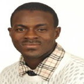

Dr. OLADOKUN SULAIMAN OLANREWAJU
Curriculum Vitae
PhD, C.Eng, C. MarEnG, MImarEST, MRINA, PIANC,
IEEE, ASME
Department of Maritime Technology
Faculty of Maritime Studies and Marine Science
University Malaysia Terengganu
Kuala Terengganu
Terengganu, 21030
Malaysia
DETAILED PROFILE OF Dr. OLADOKUN SULAIMAN OLANREWAJU
Career objective
To undertake challenges with progressive people in progressive environment -To share my experience and Knowledge with others in order to exercise sustainable practice that
will contribute significantly to the development need and future of the people and the planet.
To
be a good ambassador of a community I am represent at all time. I have built a sound academic
and professional foundation that cover holistic needs area of human biosphere and techno sphere -This is source of my source of strength to achieve these objectives.
i. Ph.D. in Mechanical Engineering (Marine Technology) - Safety and environmental Risk and
ii. Reliability Modeling for Sustainable Marine System), University Technology Malaysia, Johor,
Malaysia -2006-2009.
iii. M.Eng. in Mechanical Engineering, University Technology Malaysia, Johor, Malaysia, (2004-2006).
iv. Bachelor of Engineering in Marine Engineering (Electrical), State University of New York New York (1999-2003).
v. Associate Degree in Marine Engineering (Mechanical concentration), Federal College of Fisheries
and Marine Technology, Lagos (1992-1995).
Post PhD career development
University Malaysia Terengganu – Research fellow / Senior Lecturer (DS51) (2009 - Date) –Teaching and
learning, Consultancy, R & D
Post Masters Degree career development
Malaysian Maritime Academy, Terengganu (2006 - 2009): Marine Engineering and Marine Technology
lecturer - teaching Cadets, short courses training for professional in maritime industry, develop and
improve academic and training curriculum, research and consultancy, engineering projects towards
sustainability, energy and sustainable transportation.
Post Bachelor career development
University Technology Malaysia, Johor(2005- 2006): Teaching Assistance, Research Officer, PhD
Researcher, Design and supervision of sustainable construction of ship. Review team for port navigation
simulation studies under EIA, work for port construction project, teaching assistance, curriculum
modules development for skill update on maritime technology and management of managers in maritime
industry.
Askon Architect, New York, (2003 - 2004): Design engineer - Architectural design work
Post diploma and marine engineer license career development
i. Maersk line, Operation Officer (1996 - 1997): Port Operations - Maintenance administrative
management and customer service => Tasked to take charge of vessel operation, maintenance
scheduling, inventory update, vessel operation cost estimate, operation of EDI.
ii. Maersk Line (1995-1996): Management Trainee - All round professional and extensive training
program in shipping business that entail operations, account, sales, documentation, administration,
EDP network support, attends global quality seminars => Here I was a management trainee and
got opportunity to be rotated in all department to lend the business of shipping operation and
management.
iii. Nepline Berhad, Malaysia (Contract position, 1997): Fourth engineer officer - Tasked to assist Chief
Engineer administrative work on board ship, supervise independent watch-keeping officer on board
vessel. Update machineries running hours and execute their maintenance at planned time. Take
full change and responsibility of maintenance of boiler and purifier.
iv. Seatime Shipping, Singapore (Contract position, 1998): Third Engineer - Tasked to take
independent watch keeper on board high sea ocean going vessel. Manage engine room space.
Assist Chief engineer in operations and administrative paper works. Take full charge / responsibility
for running, and maintenance of auxiliary diesel generator.
v. Delad international, Florida (1998 - 1999): General administrative assistant - Account payable,
receivable, payroll, and customer service. man responsibility as personal to the managing director
on major company functionality requirement and lifeline duties
PROCEEDING OF CONFERENCE/SEMINAR/WORKSHOP
O. O. Sulaiman1, K.B. Samo2, A.H. Saharuddin3, Saman Ab Kader4, W. B. Wan Nik 5,
M.F.Ahmad6 (2010), Risk Based Multi- Hybrid Alternative Energy for Marine System: the Case of
Solar, Hydrogen and Convention Power Steam energy for Sustainable Power, Under Water System
Technology Conference, 02/11/2010,03/11/2010
O. O. Sulaiman, K.B.Samo, A. A Kwa, Ab. Saman, Nik Wan Sani (2010), UV53 – CFD
Simulation for Cavitation Studies and Optimization of Propeller Blade, Underwater System Technology
Conference 2010, 02/11/2010, 03/11/2010
O. O.Sulaiaman, W.n. Sani, A, H, Saharuddeen (2010), 18. Multihybrid Energy power for Port
Powering, Port and Harbour congress, 2010, 01/01/2010, 01/01/2010
O. O.sulaiman, A. H. Saharudeen (2010), Biomass Cogeneration system for MarineSystem
Powering, 18th European Biomass Conference and Exhibition, France,01/01/2010, 01/01/2010
O. O.Sulaiman1, S Azman, M Hanis Wahab, Ab Saman4, A.H. Saharuddin5 W. N Sani (2010),
Emission of Green house gas of Ships in Malaysia Johor Port, Symposium on Sustainability of Science
and Management, 2010, 01/05/2010,
01/05/2010
O.Sulaman, N. W. Sani, A.S.A.Kader (2010), Numerical Modeling For Marine Mobile Floating
Berthing Protection Facilities, ICSOT 2010 Developments In Ship Design And Construction Surabaya,
Indonesia, 11/11/2010, 12/11/2010
O.O. Sulaiman1, A. S.A. Kader2, W.B. Wan Nik3, A.H. Saharuddin4 (2010), Power Integrity
for Requirement of New Generation of ROV for Deep Sea Operation, Asia Pacific Offshore Technology
Conference, 02/11/2010, 03/11/2010
O.O. Sulaiman1, H.Aron2, , A. H. Saharuddin3 ,W.B. Wan Nik4, A.S.A.kader5, M.F.Ahmad6
(2010), Techno Economic Study Of Potential Using Solar Energy As A
Supporting Power Supply For Diesel Engine For Landing Craft, Marine Technology
Conference (MARTEC 2010), 11/12/2010, 13/12/2010
O.O. Sulaiman Olanrewaju a, A.H. Saharuddinb , Ab. Saman Ab Kaderc, W. B. Wan, Nikd
(2010), Risk based biomass for Marine system powering, 19th European Biomass Conference and
Exhibition in Lyon, 6-10 June 2011 in Berlin, Germany, 06/06/2010, 10/06/2010
O.O. Sulaiman1, MZamani, A. H. Saharuddin4, A.S.A.kader5, Towards Sustainable Green Ship
Design and Operations –International Conference on Sip Design and Operation (EAMARNET2007)
http://www.asialink-eamarnet.com/conference/programme/programme28122006.pdf
O. Sulaiman, Information Technology and Ship Shore Operation – Canadian Transportation
Research Forum (CTRF 05)
http://www.ctrf.ca/2005preliminary_program1.htm
O.O. Sulaiman1, M. Zamani, A.S.A.kader5, Sustainable Maintenance of Navigation Channel 1 – 1
ST
Regional Conference on Vehicle and Engineering & Technology (RiVET 06)
O. O. Sulaiman1, M. Zamani, A.S.A.kader5, Environmental Risk and Beyond Compliance for LPG
ship Design and Operation – Design and Operation of LPG Ships (RINA2008)-http://www.rina.org.uk/c2/uploads/lpg%20ships%20brochure3.pdf
O. O. Sulaiman1, M. Zamani, A.S.A.kader5, Utilization of Simulation for Engineering Education -Regional Conference on Engineering Education (RCEE 07)-http://www.spaceutm.edu.my/pdu/download/abstract_list_17sep07.pdf
O.O. Sulaiman1, M. Zmani, A. Shamila, A.S.A.kader5, Air Emission Riding new wave of
Technology – Marine Science and Technology Seminar (MARSTEC2008)
O. O. Sulaiman1, M. Zamani, A.S.A.kader5, Sustainable Maintenance of Navigation Channel – The
case of PTP - 1
st
Regional Conference on Vehicle Engineering and Technology (RiVET2008).
O. O. Sulaiman1, M. Zamani, A.S.A.kader5, Inland Water Hybrid Transportation- A Solution To
Modern Day Transportation Problem - 7
th
International Annual Symposium on Sustainability Science
and Management – (UMTAS2008)
O.Sulaiman, Ab. Saman, M. Zamani Risk and Reliabilty based Multihybrid Energy power for Port
Powering - Port and Harbour congress, 2010
O.Sulaiman, Ab. Saman, M. Zamani, Risk based design Process for collision aversion in Coastal
water, Conference of Marine Simulation (MARSIM, 2009)
M. Zamani, O.Sulaiman, Ab. Saman, Demand and Supply Characteristics of Continuous Education
in Developing Countries - Regional Conference on Engineering Education (RCEE07).
http://www.spaceutm.edu.my/pdu/download/abstract_list_17sep07.pdf
M. Zamani, O.Sulaiman, Ab. Saman, Failure Model and Critical Success Factors for Maritime
Research - 7
th
International Annual Symposium on Sustainability Science and
Management,(UMTAS2008), http://www.umt.edu.my/UMTAS/2008/doc/Brochurenew.pdf
M. Zamani, O.Sulaiman, Ab. Saman, An Analysis of Technological Development in Propulsion and
Transportation, A paper presented at the 2
nd
Regional Conference on Vehicle Engineering and
Technology 2008, Kuala Lumpur, 15-17 July 2008
Azie, O.O.sulaiman, K.B.Samo, Comparative Underwater Sound Characteristics in Marine, River
and Lake Environments of Kuala Terengganu
Azie, O.O.sulaiman, K.B.Samo, Underwater Noise Generated by Ferries, Boats and Dredger at a
Typical Jetty of Terengganu
Azie, O.O.sulaiman, K.B.Samo, Passive Acoustic Technique for Underwater Habitat and Noise
Study in Coastal Water of Kuala Terengganu
Azi, K.B. Samo, O.Osulaiman (2010), Passive Acoustics Tequnique for Underwater Habitat
and noise Study in Coastal Study Waters of Kuala Terengganu, UMT Symposium on Sustainability of
Science and Management, 2010, 08/01/2010,11/01/2010
O. O Sulaiman, Allan Magee, M Ilham A Razak, W.B. Wan Nik (2011), Preliminary Design And
Prototype Scale Model Of Offshore Acquaculture Floating Structure For Seaweed Ocean Farming, ICSOT:
Developments In Fixed & Floating Offshore Structures, 23 – 24 May 2012, Busan, Korea
O.O. Sulaiman, Mooring Analysis for Very Large Offshore Aquaculture Ocean Plantation Floating
Structure, the 6th Asia-Pacific Workshop on Marine Hydrodymics-APHydro2012
Malaysia, September 3-4, 2012